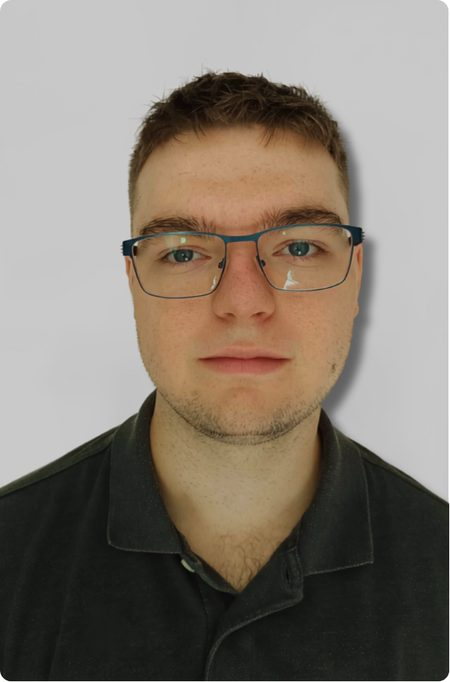
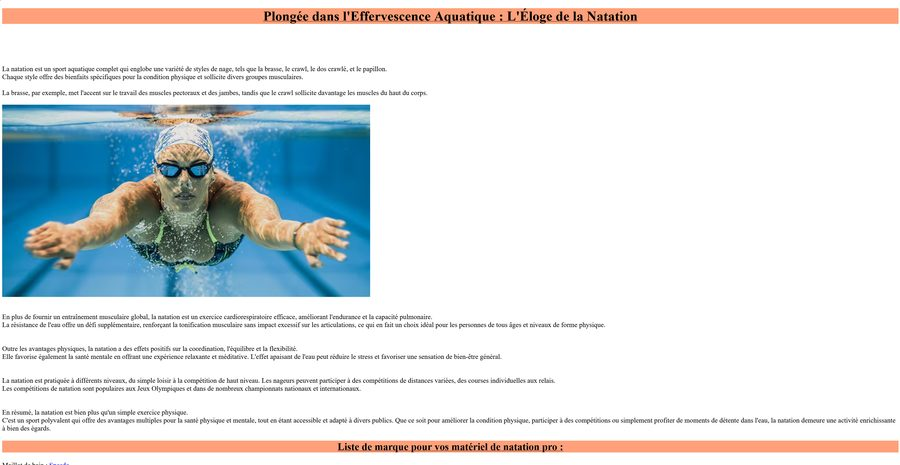
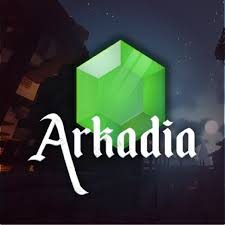
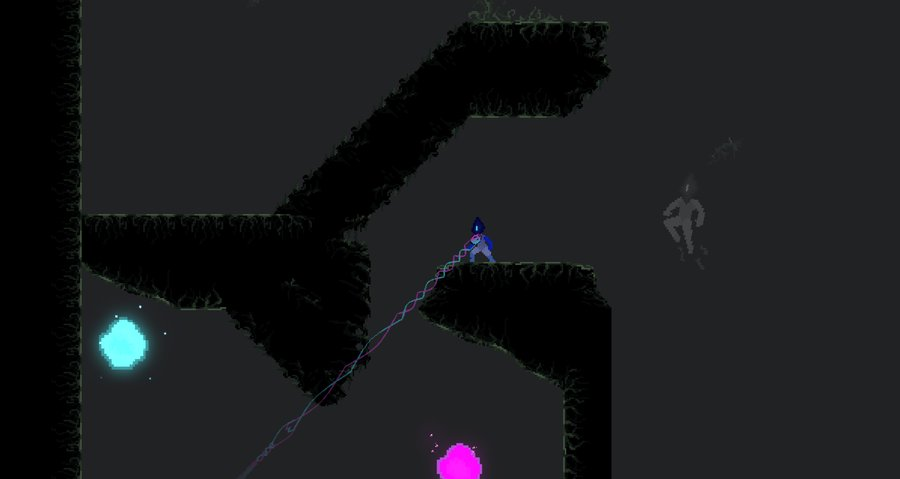
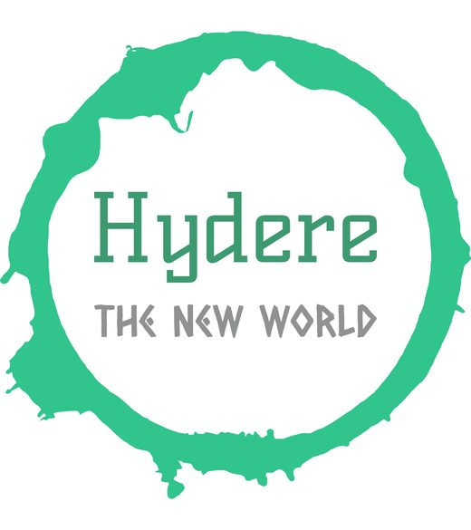
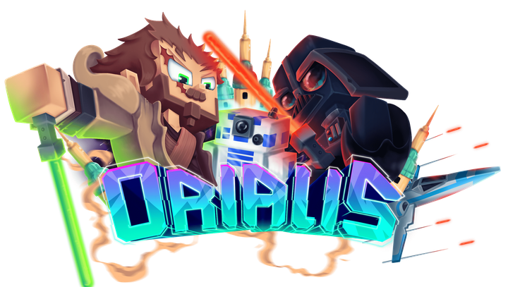

Quel portfolio veux-tu visiter ?
À propos
Formation actuelle : BTS SIO option SLAM (Solutions Logicielles et Applications Métiers), 1ʳᵉ année, à distance via le CNED.
Objectif : évoluer vers un poste de Game Designer / Level Designer, en m'appuyant sur mes bases en développement pour prototyper et itérer rapidement sur mes idées.
Je m'intéresse particulièrement à la conception d'espaces de jeu : rythme d'exploration, lecture visuelle d'un niveau, et équilibrage entre difficulté et plaisir de jeu.
Portfolio BTS SIO · option SLAM
Mon parcours, mes compétences et tous mes projets scolaires, à filtrer par niveau.
Parcours
Spécialisation Game Design / Level Design
Approfondir la conception de niveaux à travers des formations ou projets collaboratifs, et construire un portfolio de niveaux jouables.
BTS SIO SLAM, 2ᵉ année (CNED)
Poursuite de la formation, avec l'objectif d'orienter les projets vers le développement de jeu et la conception de niveaux.
BTS SIO SLAM, 1ʳᵉ année (CNED)
Formation à distance en développement logiciel, avec un travail personnel en parallèle sur la conception de niveaux et de prototypes de jeu.
Baccalauréat général (spécialités NSI et SES)
Terminale générale au CNED, épreuves passées dans les Hauts-de-France · Sans mention. Spécialités Numérique et Sciences Informatiques (NSI) et Sciences Économiques et Sociales (SES). Obtention du baccalauréat, avec un intérêt déjà marqué pour la conception de jeux et les mécaniques de gameplay.
Ce portfolio s'inscrit dans le bloc de compétences « Support et mise à disposition de services informatiques », visé au cours de la formation :
- Gérer le patrimoine informatique
- Répondre aux incidents et aux demandes d'assistance et d'évolution
- Travailler en mode projet
- Mettre à disposition des utilisateurs un service informatique
- Organiser son développement professionnel
Compétences techniques
Compétences abordées au cours du BTS SIO option SLAM, classées par catégorie. Les logos sont des pastilles aux couleurs de chaque technologie.
Développement d'applications
Langages et environnementsWeb
Pages et interfacesBases de données
Stockage et requêtesOutils & méthodes
Travail en équipeSystèmes & réseaux
Support et services (Bloc 1)Cybersécurité
Sécuriser les services (Bloc 3)Certifications
Veille technologique
Ma veille informationnelle et technologique s'appuie sur deux outils : Feedly, pour suivre mes sources d'information, et Pearltrees, où je classe les liens retenus dans des collections (veille informationnelle et technologique, formation).
Compétence du Bloc 1 : Organiser son développement professionnel (outils et stratégies de veille informationnelle).
Voir ma veille sur Pearltrees →Projets scolaires

Portfolio professionnel
Site portfolio réalisé dans un cadre scolaire (B1.6) pour présenter mon parcours, mes compétences et mes réalisations. Il se découpe en deux univers : un portfolio BTS SIO et un portfolio Game & Level Design.
Projet scolaire B1.6 « Pour mon avenir » : concevoir un portfolio en ligne pour présenter mon profil, mon parcours et mes productions.
- Une page d'accueil avec ma présentation, mon CV et ma recherche de stage
- Deux portfolios distincts : BTS SIO (SLAM) et Game & Level Design
- Des fiches détaillées pour chaque réalisation
- Une zone de contact avec formulaire
- Organiser son développement professionnel : gérer son identité professionnelle et développer son projet professionnel
Atelier 2 : MediaTek 86 — Gestion de personnel & absences
Projet à venir : application de bureau avec interface graphique, développée en C# (.NET) sous Visual Studio 2022. Elle permettrait à une médiathèque de gérer son personnel, son affectation à un service et l'historique des absences et congés, avec une base de données MySQL.
Ce projet n'est pas encore réalisé : c'est un objectif de ma formation. Cette fiche sera complétée une fois l'atelier terminé.
Atelier professionnel 2 du BTS SIO option SLAM, en lien avec la médiathèque MediaTek 86.
- Gestion centralisée du personnel
- Affectation à un service spécialisé
- Historique complet des absences et congés
- Base de données relationnelle MySQL (environnement local WampServer)
- Dépôt GitHub
- Script SQL de la base de données
- Documentation technique
- Kanban de gestion de projet
- Compte rendu d'atelier
- Installateur de l'application
- Travailler en mode projet (planification avec un Kanban)
- Mettre à disposition des utilisateurs un service informatique (déploiement avec un installateur)

Course VS Natation
Site web comparatif réalisé en cours de Sciences Numériques et Technologie (SNT), en classe de seconde. Le site oppose course à pied et natation à travers deux articles détaillant les bienfaits et particularités de chaque activité, avec citation des sources utilisées.
Projet réalisé en autonomie dans le cadre du cours de Sciences Numériques et Technologie (SNT), en classe de seconde, à publier sous forme de site web.
- Une page d'accueil présentant le débat "course à pied VS natation"
- Un article dédié à la natation
- Un article dédié à la course à pied
- Une liste des sources utilisées pour la rédaction
- Rédaction et structuration de contenu web
- Recherche et citation de sources fiables
- Mise en page HTML de base
Tableau de synthèse des compétences
Ce tableau récapitule les compétences du bloc « Support et mise à disposition de services informatiques » mobilisées par chaque réalisation. Il sera complété au fil de la formation.
| Compétence du Bloc 1 | Portfolio B1.6 | MediaTek 86 |
|---|---|---|
| Gérer le patrimoine informatique | — | — |
| Répondre aux incidents et aux demandes d'assistance et d'évolution | — | — |
| Travailler en mode projet | — | 🎯 |
| Mettre à disposition des utilisateurs un service informatique | — | 🎯 |
| Organiser son développement professionnel | ✅ | — |
✅ mobilisée · 🎯 visée (projet à venir) · — pas encore couverte
Portfolio Game & Level Design
Mes projets de serveurs, de jeux, de donjons et de quêtes, et mes objectifs de formation.
Projets de Game & Level Design

Game of Arkadia
Mission freelance sur un serveur Minecraft MMORPG narratif à l'univers médiéval, avec une double casquette Game Design et Level Design. J'y ai notamment conçu un donjon : un village fortifié infesté, dont le boss est une araignée.
Mission freelance de septembre 2025 à mars 2026, sur un serveur Minecraft MMORPG narratif à l'univers médiéval.
- Game Design
- Level Design
J'ai conçu un donjon prenant place dans un village fortifié infesté, dont le boss est une araignée.

An BauBot Adventure : Infect D.A.X
Fast plateformer d'action 2D en pixel art, réalisé sous Godot pour la BAUDO'S Jam (édition automne 2025), en co-développement avec MilanDevpy. Le joueur incarne Prometheus, un virus chargé de pirater l'Horrible DAX, avec double saut et mécaniques d'action. Le jeu est publié sur itch.io (statut prototype) et jouable directement dans le navigateur (HTML5) ou en version Windows.
Jeu réalisé pendant la BAUDO'S Jam (édition automne 2025), en co-développement avec MilanDevpy. Publié sur itch.io avec le statut « prototype ».
Le joueur incarne Prometheus, un virus dont la mission est de pirater l'Horrible DAX afin de récupérer des informations sensibles. C'est un fast plateformer d'action 2D en pixel art, avec double saut et un injecteur pour interagir avec les cibles.
- HTML5 : jouable directement dans le navigateur
- Windows : version téléchargeable

Hydere
Serveur MMORPG open world sur Minecraft Bedrock (version 1.19.X), que j'ai fondé et sur lequel je suis en charge des quêtes et des donjons. Terrasse des boss redoutables, explore une map de 42 000 blocs et découvre ses secrets !
Serveur MMORPG open world sur Minecraft Bedrock (version 1.19.X), que j'ai fondé moi-même.
En charge des quêtes et des donjons (avec boss et combats), et de la direction du projet.
- Des boss redoutables à terrasser
- Plusieurs mondes à explorer, avec leurs secrets à découvrir
- Un système de guilde
- Des équipements à débloquer, et des objets intéressants à trouver
- Des coffres à décrocher
- Des PNJ éparpillés sur la map pour améliorer ses armes
- Une map totalement libre de 42 000 blocs
La V2 est mon projet le plus abouti à ce jour.

Orialis
Conception d'une mécanique de gameplay pour un serveur Minecraft MMORPG de grande envergure, au sein d'une équipe pluridisciplinaire. Le projet étant sous accord de confidentialité, le détail de la mécanique n'est pas dévoilé ici : cette fiche présente ma démarche de travail plutôt que le contenu livré.
Projet sollicité pour concevoir une mécanique de gameplay au sein d'un serveur Minecraft MMORPG de grande envergure, en équipe pluridisciplinaire. Le sujet est couvert par un accord de confidentialité (NDA).
Conception complète d'une mécanique de gameplay, de la réflexion initiale jusqu'à la livraison du cahier des charges.
- Exploration libre avant formalisation : pas de cahier des charges imposé au départ, une phase d'idéation libre, volontairement prolongée, pour ne pas fermer de pistes trop tôt
- Ancrage systématique dans le lore : chaque mécanique confrontée à l'univers existant (bestiaire, factions, cohérence temporelle) via des recherches documentaires régulières
- Recherche de précédents : étude de systèmes réels (mécanique, physique, logique industrielle) pour la crédibilité, et de jeux existants pour se démarquer plutôt que copier
- Conception modulaire par blocs : découpage en blocs indépendants (boucle de jeu, danger, progression, dimension sociale...), chacun conçu et validé séparément
- Documentation vivante : une section "points à définir" intégrée dès la v1, mise à jour à chaque version pour piloter les zones encore floues sans bloquer l'avancement
- Itérations avec retours structurés : 6 versions du cahier des charges, chaque retour analysé section par section et les changements tracés d'une version à l'autre
- Schématisation ciblée : des schémas pour les mécaniques les plus denses, pensés pour être compris en quelques secondes par un profil non-spécialiste
- Filtre "expérience joueur" : chaque mécanique évaluée sur la sensation produite, le jeu solo/social qu'elle induit, et si elle crée un vrai choix
- Arbitrages présentés, pas imposés : les choix hors de mon ressort (économie du serveur, etc.) formalisés en options comparées, pour que l'équipe tranche en connaissance de cause
- Cohérence jusqu'à l'interface : même les messages système repensés (voix d'un personnage "Ordinateur de Bord") pour préserver l'immersion jusqu'au dernier détail
- Game design
- Logique de progression
- Économie interne
- Documentation technique
- Travail en coordination avec des développeurs
Le contenu précis de la mécanique reste confidentiel. Une attestation écrite de l'équipe, précisant mon rôle, la durée et le niveau de responsabilité, peut être fournie sur demande.